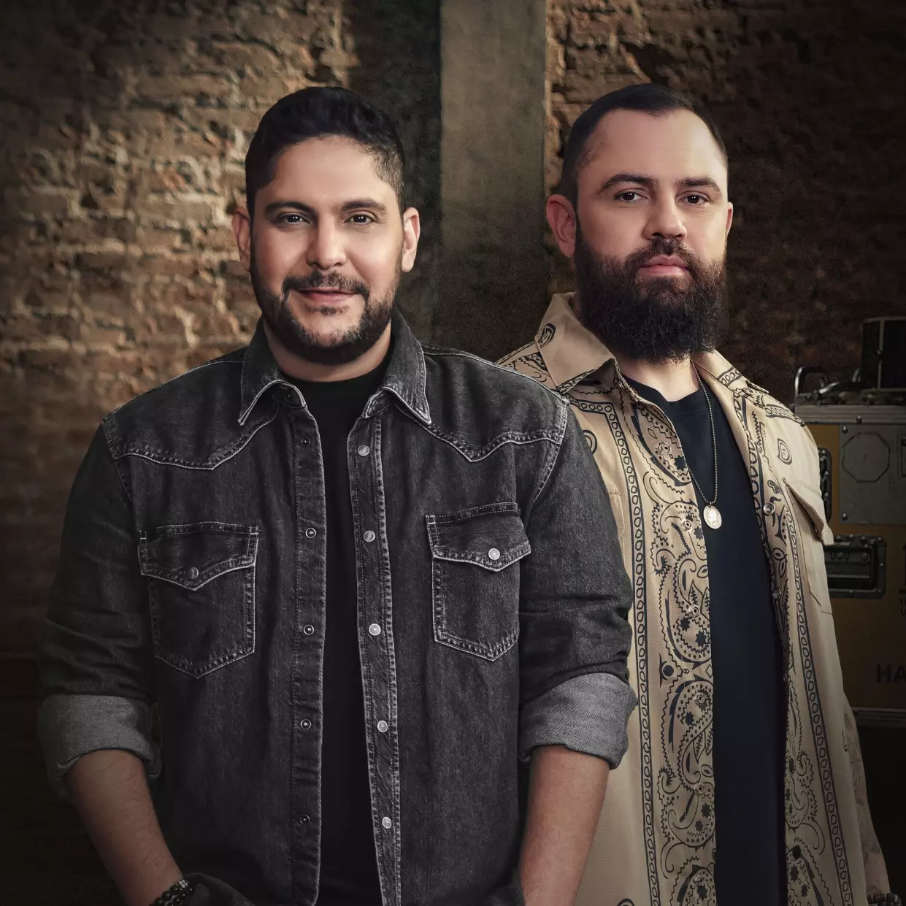
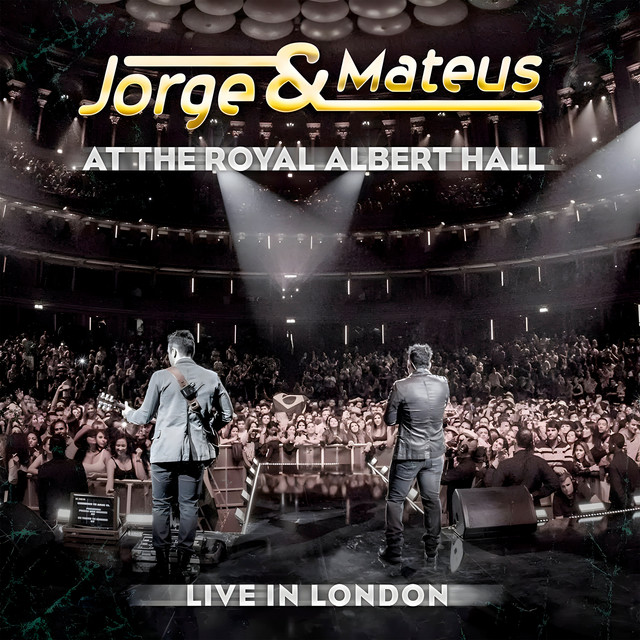
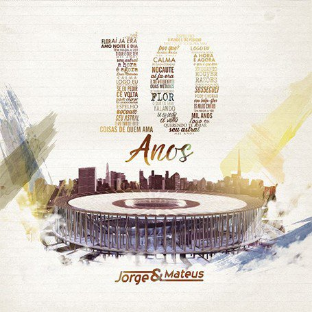

Ao Vivo em Goiânia
2007

Conheça a trajetória de Jorge & Mateus, relembre os maiores sucessos e teste o que você sabe sobre a dupla.
Jorge e Mateus cresceram em Goiás, em meio à música sertaneja.
A dupla nasceu nos anos 2000.
Os primeiros grandes sucessos chegaram ao rádio e às plataformas.
Hoje, Jorge & Mateus fazem turnês com grandes públicos pelo Brasil.
2007
2009
2010
2012

2013

2016
Responda as perguntas, veja sua pontuação e descubra se você é fã de verdade.
Testar meus conhecimentos